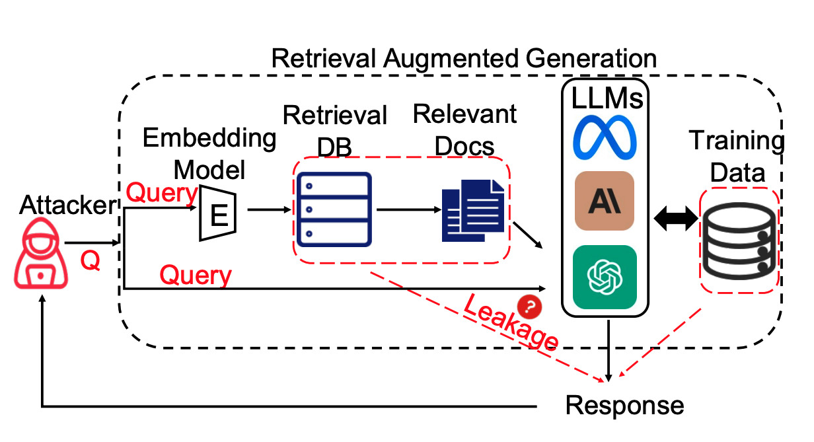
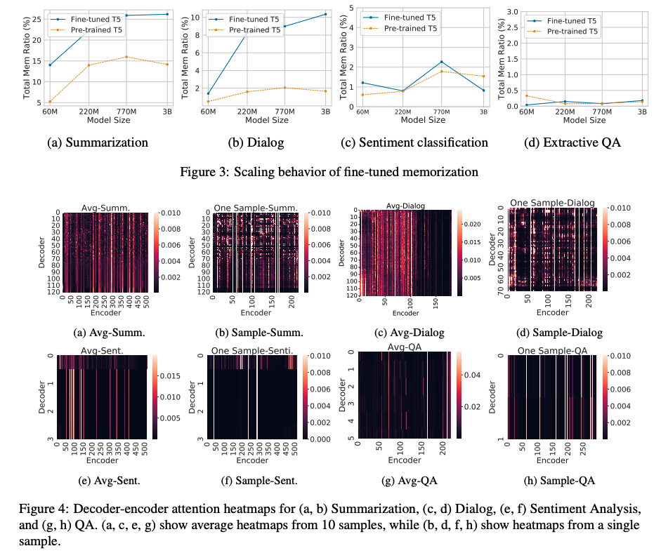

Shenglai ZengPhD StudentMichigan State University Email: zengshe1 [at] msu [dot] edu
|
|
About Me
Hi there, my name is Shenglai Zeng. Currently, I am a first-year Ph.D. student from Michigan State University, advised by professor Jiliang Tang. Previously, I received my bachelor degree from Yingcai Honor School at University of Electronic Science and Technology of China , supervised by professor Hongfang Yu. I was also a research intern of Baidu at 2023-Fall, The University of British Columbia at 22-Fall, Peen State University at 2021-Fall.
Research Interests
My current research interests are mainly about Trustworthy AI, Large language models(LLMs) and Information Retrieval. Previously, I focused on federated learning.
- Identify and mitigate the real privacy issues of LLMs.
- Leaverage LLMs to enhance/empower real-world practical applications and tasks.
- Deeper understanding of underlying mechnism behind LLMs, especially information retrieval(IR) perspective.
- Diverse attack/defense techniques on LLM systems.
News
| [2/2024] | We preprint our paper: The Good and The Bad: Exploring Privacy Issues in Retrieval-Augmented Generation (RAG) |
| [2/2023] | We preprint our paper: Copyright Protection in Generative AI: A Technical Perspective |
| [2/2023] | Our paper: Sharpness-Aware Data Poisoning Attack has got ICLR-2024 Spotlight! Congrats to all co-authors! |
| [10/2023] | We preprint our paper: Exploring Memorization in Fine-tuned Language Models! |
| [9/2023] | Began my PhD at DSE lab, Michigan State University! New journey! |
| [6/2023] | Began my Intership at Baidu.Inc! |
| [2/2023] | One paper is accepted by IEEE Transactions on Cloud Computing! |
| [12/2022] | One paper was accepted by SDM 2023, thanks to my co-authors! |
| [12/2022] | Our HFedMS submitted to TCC received major revision, good news! |
| [10/2021] | I was awarded the most outstanding undergraduate students in UESTC, which is the highest honor awarded to only 10 students in UESTC |
| [10/2022] | One paper was submitted to IEEE Transaction on Cloud Computing |
| [9/2022] | One paper was submitted to SDM 2023 on semi-supervised FL design for IoT devices. |
| [7/2022] | I was invited to serve as a PC Member for MICCAI Workshop on Distributed, Collaborative and Federated Learning (DeCaF) |
| [6/2022] | Began my remote summer internship at The University of British Columbia |
| [4/2022] | Made an online presentation on DASFAA2022, great experience! |
| [1/2022] | Our paper "Heterogeneous Federated Learning via Grouped Sequential-to-Parallel Training" was accepted by DASFAA2022, thanks to my co-authors! |
| [10/2021] | I was awarded WAC Scholarship(10 students among all students in UESTC) |
| [6/2021] | Began my remote summer internship at Peen State University, Park |
| [4/2021] | Submitted a national patent on the optimazation of federated learning |
| [10/2020] | I was awarded National Scholarship by Ministry of Education |
Preprints
The Good and The Bad: Exploring Privacy Issues in Retrieval-Augmented Generation (RAG)
Shenglai Zeng, Jiankun Zhang, Pengfei He, Yue Xing, Yiding Liu, Han Xu, Jie Ren, Shuaiqiang Wang, Dawei Yin, Yi Chang, Jiliang Tang
Submitted to ACL-2024
[Paper]
Exploring Memorization in Fine-tuned Language Models
Shenglai Zeng, Yaxin Li, Jie Ren, Yiding Liu, Han Xu, Pengfei He, Yue Xing, Shuaiqiang Wang, Jiliang Tang, Dawei Yin
Submitted to ACL-2024
[Paper]
On the Generalization of Training-based ChatGPT Detection Methods
Han Xu,Jie Ren,Pengfei He, Yingqian Cui, Shenglai Zeng, Hui Liu, Jiliang Tang, Amy Liu
Submitted to ACL-2024
[Paper]
Copyright Protection in Generative AI: A Technical Perspective
Jie Ren, Han Xu, Pengfei He, Yingqian Cui, Shenglai Zeng, Jiankun Zhang, Hongzhi Wen, Jiayuan Ding, Hui Liu, Yi Chang, Jiliang Tang
Preprint
[Paper]
Confidence-driven Sampling for Backdoor Attacks
Pengfei He,Han Xu,Yue Xing, Jie Ren, Yingqian Cui,Shenglai Zeng, Jiliang Tang, Makoto Yamada, Mohammad Sabokrou
Submitted to ICML-2024
[Paper]
Publications
Sharpness-Aware Data Poisoning Attack
Pengfei He, Han Xu, Jie Ren, Yingqian Cui, Shenglai Zeng, Hui Liu, Charu C. Aggarwal, Jiliang Tang
ICLR-2024 (Spotlight)
[Paper]
Evaluating Graph Neural Networks for Link Prediction: Current Pitfalls and New Benchmarking
Juanhui Li, Harry shomer, Haitao Mao, Shenglai Zeng, Yao Ma,Neil Shah, Jiliang Tang, Dawei Yin
NeurIPS 2023
[Paper]
HFedMS: Heterogeneous Federated Learning with Memorable Data Semantics in Industrial Metaverse
Shenglai Zeng, Zonghang Li, Hongfang Yu, Zhihao Zhang, Long Luo, Bo Li, Dusit Niyato
IEEE Transaction on Cloud Computing
[Paper]
Knowledge-Enhanced Semi-Supervised Federated Learning for Aggregating Heterogeneous Lightweight Clients in IoT
Jiaqi Wang*, Shenglai Zeng*, Zewei Long, Yaqing Wang, Houping Xiao, Fenglong Ma
SDM 2023
[Paper]
|
Heterogeneous Federated Learning via Grouped Sequential-to-Parallel Training |
Experience
|
Baidu.Inc, Beijing, China Research Intern, Summer 2023 Mentor: Yiding Liu, Dawei Yin |
|
|
The University of British Columbia, Vancouver, Canada Research Intern(MITACS program), Summer 2022 Mentor: Xiaoxiao Li |
|
|
The Pennsylvania State University, Pennsylvania, US Research Intern, Summer 2021 Mentor: Fenglong Ma |
|
|
The University of Chicago, Chicago, US Online Intern, Mar 2020-Mar 2021 Mentor: Shinan Liu |
|
|
University of Electronic Science and Technology of China, Chengdu, China Research Assisant, Oct 2020-Present Mentor: Hongfang Yu |

Selected Projects
|  |
The Good and The Bad: Exploring Privacy Issues in Retrieval-Augmented Generation (RAG) Retrieval-augmented generation (RAG) is a powerful technique to facilitate language model with proprietary and private data, where data privacy is a pivotal concern. We’ve uncovered two pivotal aspects: privacy challenges within RAG’s own data and RAG’s potential to safeguard training data. (a). Data Leak Quantified: RAG systems can leak private retrieval data, with our study showing about 50% of sensitive retrieval data being output. (b). Mitigation Efforts: We have explored naive defenses such as summarization and retrieval thresholds. These methods help mitigate risks but do not completely resolve the issue, indicating the gravity of privacy risks in RAG. (c).Training Data Safeguard: RAG shows promise in protecting training data, offering a strategy to bolster privacy in AI systems. |
|  |
Exploring Memorization in Fine-tuned Language Models In this work, we conduct the first comprehensive analysis to explore language models' (LMs) memorization during fine-tuning across tasks. (a). Fine-tuning Risks: Utilizing copyrighted or private data in fine-tuning poses privacy/IP risks. (b). Task Disparity: Summarization & Dialogue show high memorization, while QA and Classification are lower. (c). Task-specific Scaling: For high memorization tasks, memorization increases with larger models. Conversely, for low memorization tasks, increasing model size has little impact on memorization. (d). Attentions Role: High memorization tasks have uniform, sparse attention patterns. We unravel the nuances between attention & memorization. |
|
Heterogeneous Federated Learning with Memorable Data Semantics in Industrial Metaverse We present a high-performance and efficient system named HFEDMS for incorporating practical FL into Industrial Metaverse. HFEDMS reduces data heterogeneity through dynamic grouping and training mode conversion (Dynamic Sequential-to-Parallel Training, STP). Then, it compensates for the forgotten knowledge by fusing compressed historical data semantics and calibrates classifier parameters (Semantic Compression and Compensation, SCC). Finally, the network parameters of feature extractor and classifier are synchronized in different frequencies (Layer-wise Alternative Synchronization Protocol, LASP) to reduce communication costs. HFEDMS improves the classification accuracy by at least 6.4% and saves both the overall runtime and transfer bytes by up to 98%. |
|
|
Knowledge-Enhanced Semi-Supervised Federated Learning for
Aggregating Heterogeneous Lightweight Clients in IoT We propose a novel SemiFL framework named pFedKnow. pFedKnow generates lightweight personalized client models via neural network pruning techniques to reduce communication cost. Moreover, it incorporates pretrained large models as prior knowledge to guide the aggregation of personalized client models and further enhance the framework performance. Experiment results on both image and text datasets show that the proposed pFedKnow outperforms state-of-the-art baselines as well as reducing considerable communication cost.
|